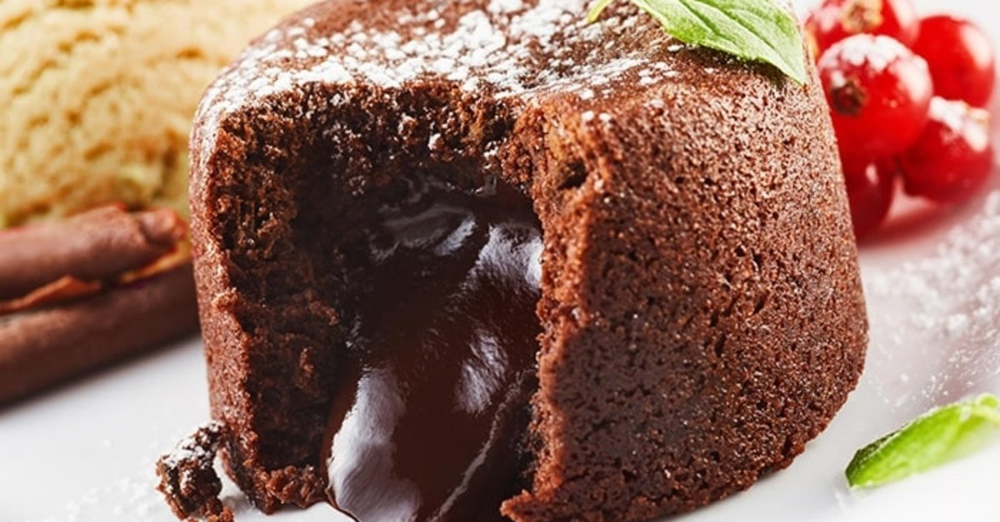

- Kaç Kişilik: 4 Kişilik
- Hazırlama Süresi 30 Dakika
- Pişirme Süresi 10 Dakika
Sufle Tarifi İçin Malzemeler
- 3 tane yumurta (yumurtalar büyükse 2 tane kullanabilirsiniz)
- 80g bitter çikolata
- Yarım su bardağı un
- 50 g tereyağı
- Yarım su bardağı şeker
- 1 çimdik tuz
Sufle Nasıl Yapılır?
- Çikolatalı sufle yapmaya başlamadan önce İlk olarak fırını 220 derecede çalıştırın.
- Tereyağı ve bitter çikolataları teflon tavada kısık ateşte karıştırarak eritin. Eridikten sonra ocağı kapatarak unu ilave edin ve iyice karıştırın.
- Ayrı bir kapta yumurta ve şekeri karışım beyazlayana kadar çırpın. Şeker tadının ön plana çıkması için tuzu ekleyip çırpın.
- Çikolatalı harcı ilave ederek mikserle tekrar çırpın. Hamurumuz hazır.
- Sufle kaplarınızı ya da ısıya dayanıklı küçük kaplarınız varsa içlerini yağlayarak hamurdan eşit şekilde hepsine paylaştırın. Yaklaşık 4 kap çıkıyor.
- Daha önceden fansız çalıştırdığınız ve ısıttığınız fırında 7-8 dk da sufleniz hazır. Fırından aldıktan sonra bir kaç dakika ilk sıcaklığının geçmesini bekleyin sonra ister tabağa çevirip ister kaseden yiyebilirsiniz.
- Kabınızı yağlamışsanız yapışmayacaktır. Folyodan sufle kapları var onları da kullanabilirsiniz, onlarda da suflenin çok rahat çıktığını göreceksini
Afiyet Olsun...